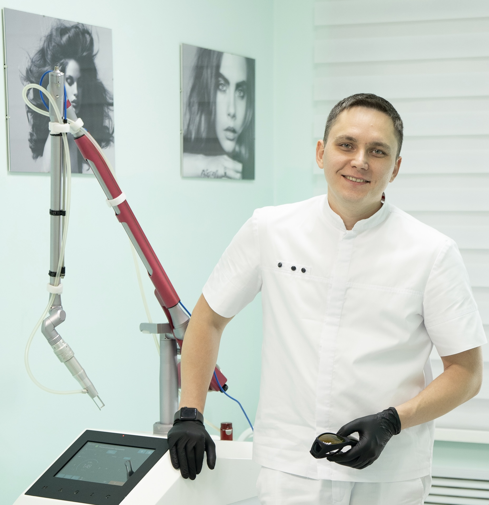

Метод Микрюкова
Персонализированная оценка риска лазерного повреждения кожи при удалении татуировок

Концепция, которую я представляю — синтез 18 лет клинических наблюдений и современной литературы по биологии воспаления и фотофизике лазеров. Цель — превратить интуитивный навык в воспроизводимую модель.
А из-за неправильной оценки способности кожи выдержать воспалительный ответ на конкретное воздействие.
Отношение объёма пигмента к объёму дермы как основа решения. Три группы риска. Почему одинаковые параметры работают по-разному.
Универсальность воспалительного ответа. Аналогии: ожоги, переломы, мозоли. Пузырь как универсальный биологический феномен.
Теория воспалительной нагрузки. Четыре этапа клинической работы. Контролируемое охлаждение как практический инструмент.
Разные лазеры — разные механизмы повреждения. Но одинаковые биологические пределы тканей.
Чем короче импульс, тем выше пиковая мощность и тем сильнее доля фотомеханического эффекта в общем повреждении ткани. Это меняет всё.
| Класс лазера | Длительность импульса | Доминирующий механизм | Объём нагрева |
|---|---|---|---|
| Длинноимпульсный ⚠ опасен для татуировок |
миллисекунды (≈ 10⁻³ с) | Фототермический | Очень большой |
| Наносекундный с модуляцией добротности |
5–10 нс типовой диапазон |
Фототермический преобладает | Средний |
| Субнаносекундный | 1–2 нс переходный класс |
Смешанный | Умеренный |
| Пикосекундный | 350–650 пс современная клиническая градация |
Фотоакустический | Минимальный |
Длинноимпульсный лазер не предназначен для удаления татуировок. Большой объёмный нагрев приводит к ожогу и потенциально к рубцу. К сожалению, в практике до сих пор встречаются попытки удалять татуировки длинноимпульсными системами — с закономерно тяжёлыми последствиями.
«Selective Photothermolysis: Precise Microsurgery by Selective Absorption of Pulsed Radiation» (Science 220:524–527, 1983). 3300+ цитирований — это фундамент всей лазерной дерматологии.
Селективное повреждение микрососудов показано после импульсов длиной волны 577 нм длительностью 300 нс, а повреждение меланосомМеланосомы — органеллы внутри меланоцитов, содержащие пигмент меланин. Их размер ≈1 мкм определяет «правильную» длительность импульса для селективного фототермолиза. внутри меланоцитов — после импульсов 351 нм длительностью 20 нс. — Anderson R.R., Parrish J.A., 1983 · Science 220:524–527
Если объём воспаления превышает биологический резерв тканей.
Маркетинг лазерных систем построен на тезисе «pico не вызывает ожогов». Это правда только для прямого термического повреждения. Но фотоакустическое воздействие при превышении дозы запускает ту же каскадную воспалительную реакцию — с тем же конечным результатом: пузырь, потенциальный рубец, гиперпигментация.
Pico снижает прямую термотравму, но не отменяет биологические пределы тканей. — Inflammatory Load Theory · Mikryukov 2026
Безопасность определяется не лазером. Она определяется отношением объёма пигмента к резерву дермы.
Вы не оцениваете только цвет, мощность или тип лазера.
Вы оцениваете: какой процент дермы будет вовлечён в воспаление после импульса.
Лазер не «растворяет» пигмент. Он создаёт фотомеханический микровзрыв: возникает плазма, расходятся акустические волны, пигмент дробится на фрагменты — а вокруг разворачивается интенсивный воспалительный ответ дермы.
Каждая частица пигмента создаёт зону воспаления вокруг себя. Чем плотнее пигмент и тоньше дерма — тем больше этих зон сливается, и тем больший процент объёма дермы оказывается охвачен воспалением.
Высокий · Средний · Низкий. Определяется анатомией, плотностью пигмента и резервом дермы — а не названием лазера.
Интенсивное лазерное воздействие приводит к вовлечению до 90% объёма дермы в выраженное воспаление, которое трудно контролировать.
Пузыри в зависимости от уровня отслоения дермо-эпидермального соединения имеют разную клиническую тяжесть — от поверхностных и обратимых до глубоких с риском некроза и рубца.
Это не проблема мощности лазера. Это отсутствие достаточного объёма интактной дермы между зонами повреждения. — Теория воспалительной нагрузки · Микрюков
При адекватной интенсивности и контроле воспаления исход благоприятный. Ткани сохраняют резерв для полноценного восстановления.
Допустима средняя плотность энергии, умеренная интенсивность, контролируемое воспаление. При корректной дозировке и охлаждении — результат предсказуемо хороший.
У тканей есть значительный резерв. Даже интенсивное воздействие не охватывает дерму целиком — воспаление остаётся локальным, восстановление идёт быстро и предсказуемо.
Одинаковая плотность энергии
может быть безопасной на лопатке
и катастрофической на запястье. Метод Микрюкова · принцип контекстной безопасности
Это не «нормальная реакция лазера». И не показатель «хорошей мощности».
Не «эффективности», не «работающей мощности», не «правильной дозы».
Это морфологический маркер того, что биологический предел был пройден.
На следующем слайде — что именно происходит на уровне тканей.
Не максимальное разрушение пигмента
за процедуру любой ценой.
А максимальное удаление пигмента
при сохранении способности тканей
к восстановлению. Метод Микрюкова · 2026
Лазер вызывает повреждение разными путями. Но реакция тканей — одна и та же биологическая программа.
Термическое, механическое, фотоакустическое, фрикционное, ультрафиолетовое — каждое из этих повреждений запускает одну и ту же каскадную программу: цитокины, проницаемость сосудов, отёк, отслойка эпидермиса.
А из-за воспалительно-сосудистой реакции, которую температура запускает. Это объясняет, почему холодная вода после ожога так драматически меняет исход: она тормозит каскад до того, как он успеет повредить ткань.
Sample sizes of burns at 24 h showed that prolonged duration of cooling with running water (≥20 минут) significantly reduced burn depth compared to shorter cooling. — Cuttle et al., 2008 · Burns. Optimal duration of cooling for an acute scald contact burn injury in a porcine model
При переломе лодыжки нет лазера. Нет нагрева. Нет ожога.
Но есть massive tissue injury, отёк, повреждение сосудов и dermo-epidermal separation.
Результат — практически идентичные пузыри.
60 трупных образцов кожи лодыжки подвергались разным уровням одноосного растяжения с гистологическим анализом. Dermo-epidermal separation возникала при растяжении ≥152% — паттерн идентичен биопсии настоящих fracture blisters. Клинически выделено 2 типа: прозрачные (с остаточными эпителиальными клетками) и кровянистые (полная dermoepidermal cleavage).
Причина — shear stress и механическая травма. Лазера нет, ожога нет. Но механизм тот же: воспаление, отёк, разделение слоёв, накопление жидкости.
Причина — UV-injury и апоптоз кератиноцитов. Запускается воспалительный каскад. Результат — пузырь. Морфологически почти неотличим от ожогового.
Причины разные. Биология ответа — одна. — ключевой тезис блока 2
Лазерное воздействие одновременно вызывает четыре эффекта:
Если плотность энергии слишком высокая, вовлечён слишком большой объём дермы или нарушена микроциркуляция — воспаление выходит за пределы компенсаторных возможностей тканей.
Тогда появляются: выраженный отёк · пузыри · ишемия · задержка заживления · риск рубцевания.
Осложнение — это не просто факт любого воздействия лазера.
Осложнение — это потеря тканями способности
контролировать воспаление в ответ
на сверхинтенсивное воздействие лазера
в конкретной клинической ситуации. Теория воспалительной нагрузки · Микрюков, 2026
Маркетинг говорит: «pico не вызывает ожогов». Это технически верно для прямого термического повреждения — но не для воспалительного ответа.
Inflammatory Load Theory как практическая модель. 4 этапа, которые превращают интуицию в воспроизводимый протокол.
Не брендом. Не длиной волны. Не маркетингом системы.
А способностью тканей контролировать воспалительный ответ
на ваше воздействие.
Это не «безопасные настройки».
Это принцип клинического мышления на каждом конкретном пациенте.
Это система клинического прогнозирования реакции тканей.
Не существует универсальной плотности энергии. Не существует универсального протокола. Потому что каждая татуировка имеет разный воспалительный потенциал.
Именно поэтому одинаковые параметры на двух разных татуировках могут дать либо идеальное восстановление, либо тяжёлое осложнение.
Не «максимально разрушить пигмент» любой ценой,
даже ценой осложнений.
А разрушить максимально возможный объём пигмента
без потери контроля над воспалением в тканях. — ключевая формулировка метода
Единственный реальный способ управлять воспалительной нагрузкой после того, как импульс лазера уже произошёл.
Охлаждение работает на четырёх параллельных, подтверждённых исследованиями физиологических уровнях — и каждый из них уменьшает воспалительную нагрузку на ткани.
Снижение температуры ткани на 10 °C от базовой физиологической нормы (~37 °C) уменьшает клеточный метаболизм примерно вдвое — это правило Q₁₀.
Подтверждено в работах по криотерапии и протективной гипотермии в реаниматологии. См. Singbartl & Green, Hubbard (2004), Bleakley (2004).
Холод вызывает вазоконстрикцию и стабилизирует эндотелий — сосуды перестают «протекать», плазма не выходит в ткань.
Местное охлаждение снижает кожную ишемию под давлением — подтверждено на животных моделях. — Mihara et al., 2015. Local cooling reduces skin ischemia under surface pressure
Холод снижает активность ферментов, синтезирующих провоспалительные медиаторы. Эффект работает на молекулярном уровне.
Импульс лазера — мгновенное событие. Но вторичное расширение воспаления продолжает развиваться часами. Без охлаждения каскад не останавливается — воспаление выходит за пределы компенсаторных возможностей тканей.
При своевременном и достаточном по длительности охлаждении воспаление достигает пика через ~30 минут и затухает. Ткани остаются в безопасной зоне — осложнения предотвращены.
Свиная модель глубокого дермального ожога. Сравнение длительности и температуры охлаждения проточной водой.
Большая доля ожогов, обработанных охлаждением 20 и 30 минут, показала достоверное улучшение по сравнению с группами 5 и 10 минут — разница статистически значима. — Cuttle et al., 2008 · Burns 34(8):1176–82
Во многих случаях осложнение формируется
не в момент импульса,
а в течение следующих часов —
как результат прогрессирующего воспаления.
Типичное окно формирования эпидермальных пузырей — 6–12 часов после процедуры.
Лазерное удаление татуировок — это управляемая воспалительная травма. Если воспаление не прогнозировать, не контролировать, не ограничивать — осложнения становятся неизбежными.
«Охлаждение — не «дополнение». Это ключевой метод контроля за воспалением и предотвращения осложнений.» © В. Микрюков, 2026
Перед первым импульсом — клиническая оценка по шести параметрам:
На основе оценки риска — настройка параметров под конкретного пациента. Не «стандартный протокол», а прогнозируемая доза.
Во время процедуры — управление общим воспалительным «бюджетом» сеанса. Это включает осознанное ограничение избыточной травмы и поэтапную обработку.
После импульса — управление вторичным повреждением. Не короткий «холодный компресс на 5 минут». А продолжительное умеренное охлаждение, соизмеримое с длительностью развития воспалительного каскада.
Чем выше воспалительный потенциал татуировки и слабее резерв дермы — тем дольше требуется удерживать охлаждение для предотвращения осложнений.
Указано совокупное время дробного охлаждения (циклы по 20–30 минут с перерывами), а не непрерывной аппликации льда.
Пузырь — это не показатель эффективности.
И не обязательный этап удаления.
Это признак того, что ткани
потеряли контроль над воспалительным ответом. — ключевая формулировка доклада
А тем, что он понимает физиологию тканей
и умеет прогнозировать и контролировать воспаление.
Лучшее удаление татуировки — это не максимальное разрушение пигмента за одну процедуру любой ценой.
Это максимальный результат при сохранении способности тканей к полноценному восстановлению. — Метод Микрюкова
Он учитывает настройки лазера и физиологию кожи в комплексе, превращая интуитивный опыт в воспроизводимую модель.
Оцените риск. Подберите параметры под пациента.
Контролируйте воспалительную нагрузку. Охлаждайте ткани.
Любой лазер становится безопасным, если работать в пределах физиологического резерва кожи.